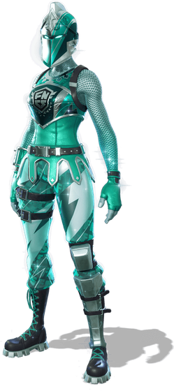

The biggest event in competitive Fortnite is the FNCS Global Championship, where the best players on the planet meet in person to decide who's world champion. This year it was played in duos (pairs) on 26 and 27 September, with 50 teams from Europe, North America, Brazil, Asia, the Middle East and Oceania fighting over a $2 million prize pool. It came down to the final moments.
Swizzy and Pixie were crowned champions, taking home $400,000 and the trophy, the Axe of Champions. But look at how tight it was: they finished on 525 points, just two ahead of second place and four ahead of third. After 12 matches, the margin between first and third was just four points.
And Swizzy made history. He also won the FNCS title in 2025, playing in trios with Merstach and Queasy, which makes him the first player ever to be a back-to-back FNCS champion: two consecutive titles, with two different sets of teammates, in two different formats.
| # | Duo | Points | Wins | Elims |
|---|---|---|---|---|
| 1 | Pixie & Swizzy (HavoK) | 525 | 1 | 39 |
| 2 | t3eny & shxrk (AURA) | 523 | 1 | 45 |
| 3 | Malibuca & Vico (BIG) | 521 | 1 | 42 |
| 4 | rapid & Clix | 443 | 1 | 28 |
| 5 | Scroll & Sky (AG) | 425 | 1 | 31 |
Second place got more eliminations than the winners: 45 to 39. In competitive Fortnite, where you finish in every game matters as much as how many players you knock out. The champions won through consistency: they stayed alive deep into almost every match, again and again.

"The menace of FNCS." The competitive scene's own outfit, added to the game this update.
Picture: Epic Games / Fortnite.
Here's the habit to steal from the champions: rotate early. When the next storm circle appears, don't finish looting that last house. Start moving straight away, towards the side of the circle with the most cover. Pros arrive first, take the best spot and let everyone else run into them. Try it for a week and count how many more times you make the top ten.
The moment the circle shows, look at where it is and plan a path.
Travel along trees, rocks and buildings, not across open fields.
Get there first and take the hill or rooftop. Let the others come to you.